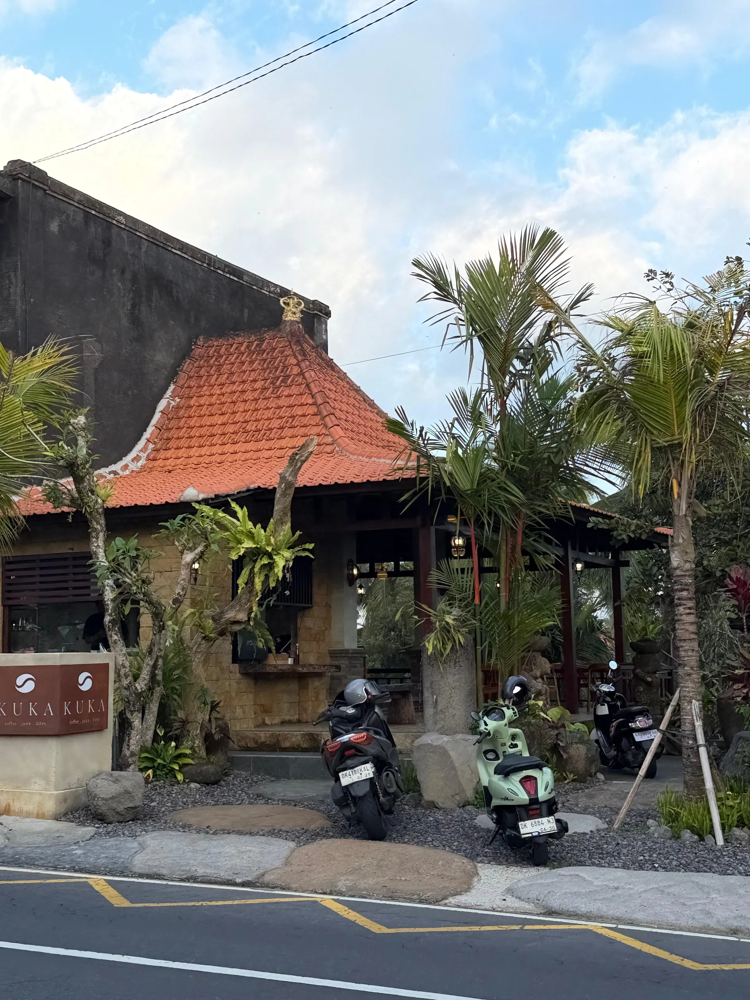
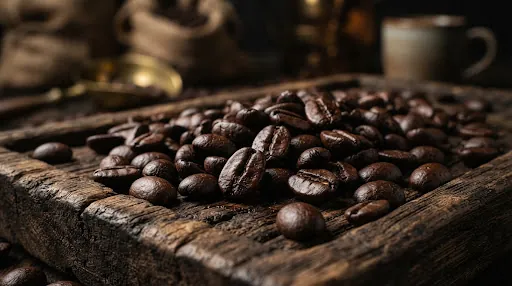
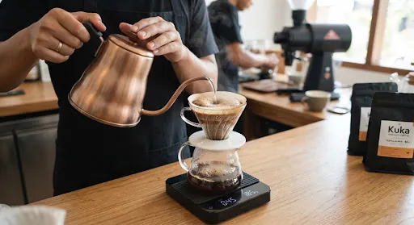

Specialty Coffee & Quiet Workspace in Tegallalang
Locally roasted single-origin coffee, high-speed 5G WiFi, and a peaceful open-air space overlooking Bali's rice terraces.
Explore Our Coffee arrow_downwardBuilt with Local Materials & Traditional Craft
We built KUKA as an open, comfortable place to pause or get real work done. No plastic, no sterile office lights—just natural ventilation, solid teak wood, and local volcanic limestone.
Every corner is shaped by Balinese builders to keep the atmosphere breezy, unhurried, and connected to the surrounding valley.

100% Bali Arabica — Munduk & Kintamani
Grown in northern Bali's volcanic highlands at 1,350m. Clean, balanced, and roasted fresh.

Single-Origin Highland Beans
Rich volcanic soil giving a cup with dark chocolate depth, subtle citrus, and a crisp, clean finish.
Brewed with Precision
Dialled-in daily on our professional espresso machine to bring out the natural sweetness and character of every single-origin bean.
Tasting Notes
-
ecoBright Acidity
-
water_dropClean Finish
-
boltBold Character
Consistency in Every Cup
Whether you order an oat flat white or a manual brew, our grinder and machine are calibrated daily for balance.

Easy to Reach, Away from the Tourist Crowds
Located right on the main Tegallalang road with easy parking. Perfectly positioned to escape the dense tourist bustle of the Ceking rice terraces while staying connected to every convenience.
Direct Main Road Access
Right on Jl. Raya Tegallalang with easy motorbike & car parking.
Indomaret & ATM Nearby
Steps away from local convenience stores and reliable ATMs.
No Ricefield Hustle
Avoid aggressive hawkers and congested tour bus crowds.
5G WiFi & Outlets
Stop by for a quick brew or plug in comfortably anytime.
Find Your Peace
Located just north of Ubud, KUKA is highly regarded as the best coffee in Tegallalang.
Address
Jl. Raya Tegallalang
Gianyar, Bali 80561
Indonesia
Hours
Everyday: 7:00 AM - 6:00 PM
Payments & Amenities
Cash, Cards & QRIS • Free 5G WiFi • Power Outlets